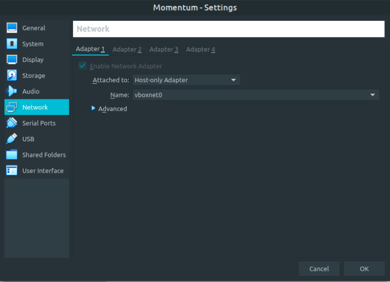

Momentum 1
▸ Momentum 1
▸ 1. Scan Network
▸ 2. Finding Services and Ports
▸ 3. Enumerate
▸ 3.1 Files and directories
▸ 3.2 Decrypting the cookie
▸ 4. Explotiation
▸ 4.1 Log in via SSH as "auxerre" (First flag)
▸ 5. Privilege Escalation
▸ 5.1 Getting the last flag
Difficulty: Easy.
Flag: 2 flags.
Learning:
• Enumerate
Scan Network
Finding services
Files and directorys
Decrypting the cookie
• Exploitation
Log in via SSH
• Privilege Escalation
Redis-cli
su command
• Download (Mirror): https://download.vulnhub.com/momentum/Momentum.ova
• Download (Torrent): https://download.vulnhub.com/momentum/Momentum.ova.torrent
Install the machine on VirtualBox:
1. Download the file.
2. On Virtualbox choose File->Import Appliance.
3. Select the file “ova”.
4. Accept to import.


Watch your Machine IP.
$ ifconfig
Output:

Diagram